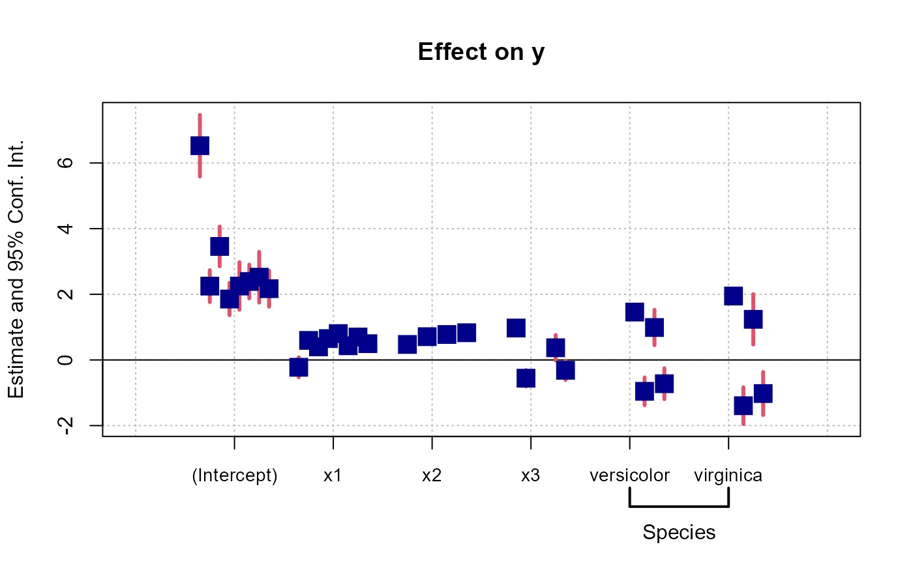

Create macros within formulas and expand them with character vectors or other formulas.
xpd(fml, ..., lhs, rhs, data = NULL)
| fml | A formula containing macros variables. Each macro variable must start with two dots. The macro variables can be set globally using |
|---|---|
| ... | Definition of the macro variables. Each argument name corresponds to the name of the macro variable. It is required that each macro variable name starts with two dots (e.g. |
| lhs | If present then a formula will be constructed with |
| rhs | If present, then a formula will be constructed with |
| data | Either a character vector or a data.frame. This argument will only be used if a macro of the type |
It returns a formula where all macros have been expanded.
In xpd, the default macro variables are taken from getFixest_fml. Any value in the ... argument of xpd will replace these default values.
The definitions of the macro variables will replace in verbatim the macro variables. Therefore, you can include multi-part formulas if you wish but then beware of the order of the macros variable in the formula. For example, using the airquality data, say you want to set as controls the variable Temp and Day fixed-effects, you can do setFixest_fml(..ctrl = ~Temp | Day), but then feols(Ozone ~ Wind + ..ctrl, airquality) will be quite different from feols(Ozone ~ ..ctrl + Wind, airquality), so beware!
In a formula, the dot square bracket (DSB) operator can: i) create manifold variables at once, or ii) capture values from the current environment and put them verbatim in the formula.
Say you want to include the variables x1 to x3 in your formula. You can use xpd(y ~ x.[1:3]) and you'll get y ~ x1 + x2 + x3.
To summon values from the environment, simply put the variable in square brackets. For example: for(i in 1:3) xpd(y.[i] ~ x) will create the formulas y1 ~ x to y3 ~ x depending on the value of i.
You can include a full variable from the environment in the same way: for(y in c("a", "b")) xpd(.[y] ~ x) will create the two formulas a ~ x and b ~ x.
The DSB can even be used within variable names, but then the variable must be nested in character form. For example y ~ .["x.[1:2]_sq"] will create y ~ x1_sq + x2_sq. Using the character form is important to avoid a formula parsing error.
In all fixest estimations, this special parsing is enabled, so you don't need to use xpd.
Limitations: the use of multiple square brackets within a single variable is not implemented. For example, the following will not work xpd(y ~ ..x, ..x = x.[1:3]_.[1:3]).
You can catch several variable names at once by using regular expressions. To use regular expressions, you need to enclose it in the dot-dot function: ..("regex"). For example, ..("Sepal") will catch both the variables Sepal.Length and Sepal.Width from the iris data set. In a fixest estimation, the variables names from which the regex will be applied come from the data set. If you use xpd, you need to provide either a data set or a vector of names in the argument data.
Note that the dot square bracket operator (DSB, see before) is applied before the regular expression is evaluated. This means that ..("x.[3:4]_sq") will lead, after evaluation of the DSB, to ..("x3_sq|x4_sq"). It is a handy way to insert range of numbers in a regular expression.
setFixest_fml to set formula macros.
# Small examples with airquality data data(airquality) # we set two macro variables setFixest_fml(..ctrl = ~ Temp + Day, ..ctrl_long = ~ poly(Temp, 2) + poly(Day, 2)) # Using the macro in lm with xpd: lm(xpd(Ozone ~ Wind + ..ctrl), airquality)#> #> Call: #> lm(formula = xpd(Ozone ~ Wind + ..ctrl), data = airquality) #> #> Coefficients: #> (Intercept) Wind Temp Day #> -76.5168 -3.0681 1.8622 0.2506 #>#> #> Call: #> lm(formula = xpd(Ozone ~ Wind + ..ctrl_long), data = airquality) #> #> Coefficients: #> (Intercept) Wind poly(Temp, 2)1 poly(Temp, 2)2 poly(Day, 2)1 #> 69.603 -2.773 206.921 90.449 26.681 #> poly(Day, 2)2 #> 20.483 #># You can use the macros without xpd() in fixest estimations a = feols(Ozone ~ Wind + ..ctrl, airquality) b = feols(Ozone ~ Wind + ..ctrl_long, airquality) etable(a, b, keep = "Int|Win")#> a b #> Dependent Var.: Ozone Ozone #> #> (Intercept) -76.52** (24.11) 69.60*** (6.637) #> Wind -3.068*** (0.6629) -2.773*** (0.6451) #> _______________ __________________ __________________ #> S.E. type IID IID #> Observations 116 116 #> R2 0.57308 0.62167 #> Adj. R2 0.56164 0.60447# Using .[] base = setNames(iris, c("y", "x1", "x2", "x3", "species")) i = 2:3 z = "species" lm(xpd(y ~ x.[2:3] + .[z]), base)#> #> Call: #> lm(formula = xpd(y ~ x.[2:3] + .[z]), data = base) #> #> Coefficients: #> (Intercept) x2 x3 speciesversicolor #> 3.682982 0.905946 -0.005995 -1.598362 #> speciesvirginica #> -2.112647 #>#> OLS estimation, Dep. Var.: y #> Observations: 150 #> Standard-errors: IID #> Estimate Std. Error t value Pr(>|t|) #> (Intercept) 3.682982 0.107403 34.291343 < 2.2e-16 *** #> x2 0.905946 0.074311 12.191282 < 2.2e-16 *** #> x3 -0.005995 0.156260 -0.038368 9.6945e-01 #> speciesversicolor -1.598362 0.205706 -7.770113 1.3154e-12 *** #> speciesvirginica -2.112647 0.304024 -6.948940 1.1550e-10 *** #> --- #> Signif. codes: 0 '***' 0.001 '**' 0.01 '*' 0.05 '.' 0.1 ' ' 1 #> RMSE: 0.333482 Adj. R2: 0.832221# # You can use xpd for stepwise estimations # # Note that for stepwise estimations in fixest, you can use # the stepwise functions: sw, sw0, csw, csw0 # -> see help in feols or in the dedicated vignette # we want to look at the effect of x1 on y # controlling for different variables base = iris names(base) = c("y", "x1", "x2", "x3", "species") # We first create a matrix with all possible combinations of variables my_args = lapply(names(base)[-(1:2)], function(x) c("", x)) (all_combs = as.matrix(do.call("expand.grid", my_args)))#> Var1 Var2 Var3 #> [1,] "" "" "" #> [2,] "x2" "" "" #> [3,] "" "x3" "" #> [4,] "x2" "x3" "" #> [5,] "" "" "species" #> [6,] "x2" "" "species" #> [7,] "" "x3" "species" #> [8,] "x2" "x3" "species"res_all = list() for(i in 1:nrow(all_combs)){ res_all[[i]] = feols(xpd(y ~ x1 + ..v, ..v = all_combs[i, ]), base) } etable(res_all)#> model 1 model 2 model 3 #> Dependent Var.: y y y #> #> (Intercept) 6.526*** (0.4789) 2.249*** (0.2480) 3.457*** (0.3092) #> x1 -0.2234 (0.1551) 0.5955*** (0.0693) 0.3991*** (0.0911) #> x2 0.4719*** (0.0171) #> x3 0.9721*** (0.0521) #> speciesversicolor #> speciesvirginica #> _________________ _________________ __________________ __________________ #> S.E. type IID IID IID #> Observations 150 150 150 #> R2 0.01382 0.84018 0.70724 #> Adj. R2 0.00716 0.83800 0.70325 #> model 4 model 5 model 6 #> Dependent Var.: y y y #> #> (Intercept) 1.856*** (0.2508) 2.251*** (0.3698) 2.390*** (0.2623) #> x1 0.6508*** (0.0667) 0.8036*** (0.1063) 0.4322*** (0.0814) #> x2 0.7091*** (0.0567) 0.7756*** (0.0643) #> x3 -0.5565*** (0.1275) #> speciesversicolor 1.459*** (0.1121) -0.9558*** (0.2152) #> speciesvirginica 1.947*** (0.1000) -1.394*** (0.2857) #> _________________ ___________________ __________________ ___________________ #> S.E. type IID IID IID #> Observations 150 150 150 #> R2 0.85861 0.72591 0.86331 #> Adj. R2 0.85571 0.72027 0.85954 #> model 7 model 8 #> Dependent Var.: y y #> #> (Intercept) 2.521*** (0.3939) 2.171*** (0.2798) #> x1 0.6982*** (0.1195) 0.4959*** (0.0861) #> x2 0.8292*** (0.0685) #> x3 0.3716. (0.1983) -0.3152* (0.1512) #> speciesversicolor 0.9881*** (0.2747) -0.7236** (0.2402) #> speciesvirginica 1.238** (0.3913) -1.023** (0.3337) #> _________________ __________________ __________________ #> S.E. type IID IID #> Observations 150 150 #> R2 0.73238 0.86731 #> Adj. R2 0.72500 0.86271# # You can use macros to grep variables in your data set # # Example 1: setting a macro variable globally data(longley) setFixest_fml(..many_vars = grep("GNP|ployed", names(longley), value = TRUE)) feols(Armed.Forces ~ Population + ..many_vars, longley)#> OLS estimation, Dep. Var.: Armed.Forces #> Observations: 16 #> Standard-errors: IID #> Estimate Std. Error t value Pr(>|t|) #> (Intercept) 4403.682352 4091.847594 1.076209 0.307112 #> Population -22.844324 32.671302 -0.699217 0.500356 #> GNP.deflator 7.638472 12.347773 0.618611 0.550003 #> GNP 3.150533 3.554170 0.886433 0.396201 #> Unemployed -0.591649 0.389005 -1.520928 0.159248 #> Employed -50.059800 25.348299 -1.974878 0.076522 . #> --- #> Signif. codes: 0 '***' 0.001 '**' 0.01 '*' 0.05 '.' 0.1 ' ' 1 #> RMSE: 36.1 Adj. R2: 0.569345# Example 2: using ..("regex") to grep the variables "live" feols(Armed.Forces ~ Population + ..("GNP|ployed"), longley)#> OLS estimation, Dep. Var.: Armed.Forces #> Observations: 16 #> Standard-errors: IID #> Estimate Std. Error t value Pr(>|t|) #> (Intercept) 4403.682352 4091.847594 1.076209 0.307112 #> Population -22.844324 32.671302 -0.699217 0.500356 #> GNP.deflator 7.638472 12.347773 0.618611 0.550003 #> GNP 3.150533 3.554170 0.886433 0.396201 #> Unemployed -0.591649 0.389005 -1.520928 0.159248 #> Employed -50.059800 25.348299 -1.974878 0.076522 . #> --- #> Signif. codes: 0 '***' 0.001 '**' 0.01 '*' 0.05 '.' 0.1 ' ' 1 #> RMSE: 36.1 Adj. R2: 0.569345# Example 3: same as Ex.2 but without using a fixest estimation # Here we need to use xpd(): lm(xpd(Armed.Forces ~ Population + ..("GNP|ployed"), data = longley), longley)#> #> Call: #> lm(formula = xpd(Armed.Forces ~ Population + ..("GNP|ployed"), #> data = longley), data = longley) #> #> Coefficients: #> (Intercept) Population GNP.deflator GNP Unemployed #> 4403.6824 -22.8443 7.6385 3.1505 -0.5916 #> Employed #> -50.0598 #># # You can also put numbers in macros # res_all = list() for(p in 1:3){ res_all[[p]] = feols(xpd(Ozone ~ Wind + poly(Temp, ..p), ..p = p), airquality) } etable(res_all)#> model 1 model 2 model 3 #> Dependent Var.: Ozone Ozone Ozone #> #> (Intercept) 72.28*** (6.847) 70.40*** (6.518) 71.31*** (6.512) #> Wind -3.055*** (0.6633) -2.866*** (0.6315) -2.928*** (0.6295) #> poly(Temp)1 214.7*** (29.17) 209.0*** (27.73) 201.5*** (28.02) #> poly(Temp)2 93.36*** (25.44) 101.7*** (25.91) #> poly(Temp)3 -37.32 (25.03) #> _______________ __________________ __________________ __________________ #> S.E. type IID IID IID #> Observations 116 116 116 #> R2 0.56871 0.61501 0.62256 #> Adj. R2 0.56108 0.60469 0.60896# # lhs and rhs arguments # # to create a one sided formula from a character vector vars = letters[1:5] xpd(rhs = vars)#> ~a + b + c + d + e #> <environment: 0x0000000042943b48># Alternatively, to replace the RHS xpd(y ~ 1, rhs = vars)#> y ~ a + b + c + d + e #> <environment: 0x00000000426d0dd8># To create a two sided formula xpd(lhs = "y", rhs = vars)#> y ~ a + b + c + d + e #> <environment: 0x00000000442116b8># # Dot square bracket operator # # You can create multiple variables at once xpd(y ~ x.[1:5] + z.[2:3])#> y ~ x1 + x2 + x3 + x4 + x5 + z2 + z3 #> <environment: 0x00000000426d0dd8># You can summon variables from the environment var = "a" xpd(y ~ x.[var])#> y ~ xa #> <environment: 0x00000000426d0dd8># ... the variables can be multiple vars = LETTERS[1:3] xpd(y ~ x.[vars])#> y ~ xA + xB + xC #> <environment: 0x00000000426d0dd8># You can have "complex" variable names but they must be nested in character form xpd(y ~ .["x.[vars]_sq"])#> y ~ xA_sq + xB_sq + xC_sq #> <environment: 0x00000000426d0dd8># DSB can be used within regular expressions re = c("GNP", "Pop") xpd(Unemployed ~ ..(".[re]"), data = longley)#> Unemployed ~ GNP.deflator + GNP + Population #> <environment: 0x00000000426d0dd8># => equivalent to ..("GNP|Pop")